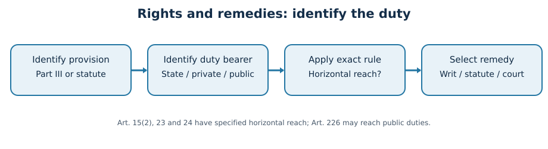
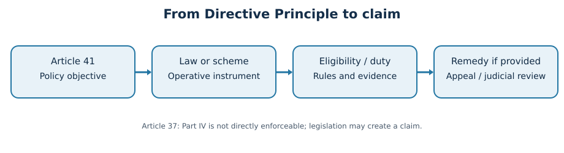

Paper III | Unit II | Topic 2
Fundamental Rights, Directive Principles, Rule of Law and Fundamental Duties
Status: EXPANDED WORKING DRAFT — NOT ACADEMICALLY APPROVED. Original practice questions only; no item is labelled an official previous-year question. Research cut-off: 23 October 2026.
Exact syllabus map
Source: Telangana State Public Service Commission, Group-I Notification No. 02/2024 dated 19 February 2024, Annexure II, Paper III, Section II (Constitution of India), numbered item 2. Official notification: https://websitenew.tgpsc.gov.in/preview/RElSRUNUUkVDUlVJVE1FTlROT1RJL05PVElGSUNBVElPTl9OT18wMi0yMDI0X0dyb3VwLUlfU2VydmljZXMgKDEpMjAyNDAyMjAxNDA3MzcucGRmr95v17a0y2d8i13v
Exact syllabus wording: Fundamental Rights: Nature and Scope; Expanding horizons of Fundamental Rights; Enforceability against State and others; Welfare State and Distributive Justice under the Constitution; Directive Principles of State Policy - Rule of Law and Fundamental Duties.
Topic summary
The Indian constitutional framework links enforceable liberty and equality to the long-term project of a socially just welfare state. Part III creates judicially enforceable rights; Part IV directs public policy; Part IVA describes civic duties. Their interaction is tested through equality, privacy, state accountability, legal remedies, policy implementation and the limits of public power.
Detailed textbook notes
Constitutional architecture: rights, restrictions and remedies
Part III (Articles 12–35) creates enforceable constitutional guarantees rather than a general catalogue of desirable policies. The six familiar groups are equality (14–18), freedoms (19–22), protection against exploitation (23–24), religious freedom (25–28), cultural and educational rights (29–30), and constitutional remedies (32). The original property guarantee ceased to be a Fundamental Right under the Forty-fourth Amendment; Article 300A now requires authority of law for deprivation of property. Articles 20 and 21 protect all persons, while Article 19 is confined to citizens. That distinction matters for migrants, foreigners and corporate litigants: the text of the particular right, rather than a general assumption of universal citizenship, determines standing.
Rights are neither identical nor absolute. Article 19 enumerates distinct freedoms and permits restrictions on specifically stated grounds: for example, speech under Article 19(2) may be restricted by law for public order, decency, defamation and other listed grounds. A state cannot defend every speech restriction merely by invoking public interest. Courts examine legal authority, legitimate purpose, rational connection and proportionality, while applying the governing doctrine to the right in issue. Article 21 states that life or personal liberty may not be deprived except according to procedure established by law; judicial interpretation requires that procedure to be just, fair and reasonable.
The structure couples guarantees to remedies. Article 32 gives direct access to the Supreme Court for enforcement of Fundamental Rights, and Article 226 gives High Courts broader writ jurisdiction, extending to other legal rights. Habeas corpus tests unlawful detention; mandamus commands performance of public duty; certiorari quashes an unlawful adjudicatory order; prohibition restrains a body exceeding jurisdiction; quo warranto challenges unlawful occupation of public office. The correct writ depends on the wrong and the institutional actor. For a Telangana applicant excluded by an arbitrary public recruitment rule, Article 14 and High Court review may be central; an ordinary private contract dispute does not automatically become a writ case.
Constitutional remedies are constrained by procedure and institutional competence. Courts can invalidate unconstitutional state action but ordinarily do not choose budget allocations or administer welfare departments. Public-interest litigation broadened access for vulnerable people, yet unverified allegations and judicial overreach can divert courts from their adjudicatory function. The serious examination answer therefore connects the violated article, the respondent, the permissible limitation, the remedy and the likely implementation obstacle.
A constitutional guarantee is a legal relationship, not a slogan
A right must be analysed by asking who holds it, who owes the corresponding duty, what conduct is protected, what limitation is permitted, and which institution can supply a remedy. This method prevents several recurring examination errors. The word “person” in Articles 14 and 21 embraces non-citizens, although certain political or civil freedoms are citizen-specific. An incorporated company may invoke some guarantees where their nature permits; it cannot be treated as a human being for every personal right. A detained migrant worker can claim the procedural protection of Article 21 without first proving Indian citizenship. By contrast, the freedoms in Article 19(1) are expressly secured to citizens. Fundamental Rights do not create one undifferentiated catalogue of absolute liberties.
The architecture of Article 12 and Article 13. Article 12 defines “State” for Part III to include Union and State governments and legislatures, local authorities and other authorities within the constitutional formulation. Judicial decisions examine statutory creation, financial and functional control, the nature of governmental functions and the degree of pervasive control when deciding whether a body is an instrumentality of the State. A government-owned entity may be covered even though it is incorporated under company law; mere licensing or regulation of an ordinary private enterprise is not conclusive. Article 13 declares pre-Constitution laws inconsistent with Fundamental Rights void to the extent of inconsistency, and bars the State from making rights-infringing law. A student should distinguish the invalidity of the offending provision from the validity of an entire statute: severability may preserve independent lawful parts. Article 13 also uses a broad notion of “law”, covering subordinate rules, regulations and notifications within its terms. The separate question of constitutional amendments is governed by the basic-structure doctrine.
Rights and limits operate article by article. A general statement that “reasonable restrictions apply to all Fundamental Rights” is inaccurate. Article 19 contains enumerated grounds for restrictions on its particular freedoms; Articles 25–26 include express qualifications; Article 21 is interpreted through fairness and constitutional proportionality in relevant contexts; Articles 20 and 21 contain special emergency protection. The Forty-fourth Amendment ensured that Articles 20 and 21 cannot be suspended through an Article 359 presidential order. During a proclaimed emergency, rights analysis must still examine the particular constitutional provision and the precise legal instrument, rather than assume all rights disappear. Restrictions should be examined for valid legal authority, a constitutionally permitted purpose, evidence connecting means and ends, and safeguards against arbitrary implementation.
Remedies are part of the substance. A paper entitlement without a functioning complaint mechanism is fragile. Under Article 32, a person can approach the Supreme Court for enforcement of Fundamental Rights; under Article 226, the High Court can issue directions, orders and writs for rights and “for any other purpose”. Article 226 therefore reaches some unlawful administrative action even when the petitioner cannot prove a Part III breach. Writ jurisdiction is discretionary and governed by doctrines such as alternative effective remedies, delay and the public-law character of the duty; it is not an automatic substitute for every civil suit. Article 136 special-leave jurisdiction is distinct from Article 32 original rights enforcement. The National Human Rights Commission, created by the Protection of Human Rights Act, 1993, can investigate and recommend, but it is not a constitutional court issuing Article 32 decrees.
Five writs as practical instruments. Habeas corpus demands justification for detention and may address unlawful private confinement. Mandamus compels performance of a legally owed public duty, not a discretionary favour. Certiorari corrects certain jurisdictional or legal errors in completed proceedings; prohibition restrains a body from continuing beyond jurisdiction. Quo warranto tests whether a person lawfully holds a public office, with standing rules different from many personal-rights petitions. A Telangana candidate denied an examination hall ticket contrary to a binding recruitment rule may seek appropriate public-law relief, but the petition must identify the rule, the decision-maker, the record and the injury. A complaint about a private coaching centre’s refund generally belongs first to contractual or consumer-law remedies unless a separate public duty is established.
Public-interest litigation: access and risk. Relaxed standing allowed courts to hear complaints concerning bonded labour, prison conditions, environmental harm and people unable to litigate individually. This changed access to justice, not the requirement for reliable evidence. A petition supported by field records, affected persons and a workable remedial proposal is different from litigation based on political rivalry or speculative allegations. Courts may order investigation, continuing monitoring or compliance reports; nevertheless, democratic institutions must retain responsibility for detailed budgeting and administration. The appropriate conclusion in a mains answer is therefore neither that courts should manage every department nor that judicial review should be passive: constitutional remedies are a necessary check, while implementation depends on responsible executive institutions.
Telangana administrative case study. Suppose a district scholarship portal rejects students whose names differ slightly between school and identity databases. The constitutional issue is not simply “technology failure”. Ask whether a public authority imposed an arbitrary eligibility condition (Article 14), whether children’s education or dignity is affected (Articles 21 and 21A where applicable), whether a statute or government order supplies a benefit, and whether correction, notice and human review exist. The remedy could combine an administrative appeal, a grievance mechanism and, where justified, a High Court writ. An effective design uses bilingual notices, accessible verification, a documented appeal deadline and audit of wrongful rejections. This translates the constitutional architecture into a testable governance outcome.
Equality: formal neutrality, substantive equality and reservations
Article 14 guarantees equality before the law and equal protection of laws. The former rejects arbitrary privilege; the latter allows classification when there is an intelligible differentia with rational nexus to a legitimate objective. Modern arbitrariness jurisprudence also asks whether state action is manifestly arbitrary. Article 15 prohibits discrimination on listed grounds but contains enabling provisions for special measures for women, children, socially and educationally backward classes, Scheduled Castes and Scheduled Tribes, and economically weaker sections subject to its terms. Article 16 governs equality of opportunity in public employment and contains distinct enabling provisions for reservations and related measures. Article 17 abolishes untouchability, supported by the Protection of Civil Rights Act, 1955 and Scheduled Castes and Scheduled Tribes (Prevention of Atrocities) Act, 1989.
Formal equality says similarly placed persons must receive similar treatment. Substantive equality asks whether historical exclusion makes identical treatment ineffective. A village school without accessible toilets may be formally open to all yet functionally inaccessible to girls or persons with disabilities. Reservations, scholarships, hostels, accessible infrastructure and anti-discrimination enforcement respond to different mechanisms of disadvantage. They cannot be evaluated only by whether an individual seat was reserved: representation, educational completion, public-service performance and actual inclusion are separate outcomes.
In Indra Sawhney (1992), the Supreme Court addressed backward-class reservation in central services, the creamy-layer principle for OBCs and the ordinary 50-percent ceiling subject to exceptional circumstances. Later constitutional amendments and decisions complicate any simplistic claim that every reservation is governed by one unqualified rule. The 103rd Amendment introduced EWS provisions, upheld in Janhit Abhiyan (2022); the Supreme Court in State of Punjab v Davinder Singh (2024) permitted sub-classification within Scheduled Castes subject to constitutional constraints and evidentiary justification. For Telangana, policy analysis must distinguish statewide BC classification, SC/ST safeguards, local administrative data and the exact law or government order currently in force; political announcements are not automatically operative legal entitlements.
The strongest critique of affirmative action is not that equality requires blindness to caste. It is whether classification is supported by evidence, benefits reach the most disadvantaged, institutions maintain quality, and non-reservation investments reduce upstream inequality. Conversely, a purely merit-based argument that ignores unequal schooling, nutrition, social networks and discrimination assumes an equal starting line that often does not exist. Administrators should publish transparent eligibility rules, provide appeal mechanisms, update empirical evidence and assess actual beneficiary outcomes.
Equality as a theory of public action
Formal equality prevents the State from treating similarly situated persons differently without justification. Substantive equality recognises that social hierarchies, unequal schools, inherited property, gendered unpaid care and disability barriers can make formally identical rules produce unequal opportunity. The two are complementary but not identical. For example, one recruitment examination administered under identical conditions may still disadvantage blind candidates unless accessible question formats and reasonable accommodation are provided. Accommodation does not dispense with a legitimate job standard; it removes an irrelevant barrier to demonstrating competence. The Rights of Persons with Disabilities Act, 2016 supplies statutory duties and institutional machinery, while Articles 14 and 21 provide the constitutional setting.
The equality code is differentiated. Article 14 covers equality before law and equal protection; Articles 15 and 16 address prohibited discrimination and equality in specified fields. Article 15(1) constrains State discrimination on religion, race, caste, sex or place of birth, while Article 15(2) also prohibits discrimination on specified grounds in access to shops, public restaurants, hotels, places of public entertainment and certain publicly maintained or publicly dedicated facilities. Article 16 deals with public employment, not an automatic reservation entitlement in every private job. Article 17 abolishes untouchability and prohibits its practice in any form; Article 18 regulates titles. The Protection of Civil Rights Act, 1955 and the SC/ST (Prevention of Atrocities) Act, 1989 address different statutory wrongs. Article 17's constitutional prohibition is not exhausted by a scholarship scheme: social exclusion, denial of public access and coercive practices require investigation and prosecution where statutory elements are met.
Reasonable classification versus arbitrary classification. The classic Article 14 test permits a class-based law where the distinction is intelligible and bears a rational relation to the objective. Courts also scrutinise arbitrary State conduct and, in relevant contexts, manifest arbitrariness of legislation. A hostel priority for remote tribal habitations may be rationally connected to distance-related exclusion; a preference based solely on the political affiliation of an applicant is not. Equality does not forbid all differentiation. It requires defensible reasons and constitutionally legitimate purposes, with heightened attention when explicit prohibitions or protected interests are implicated.
Reservation has distinct constitutional routes. Article 15(4) permits special provisions for socially and educationally backward classes and SC/ST communities; Article 15(5) concerns admissions in specified educational institutions subject to its constitutional exclusions; Article 15(6) provides for EWS measures within its terms. Article 16(4) enables reservation for a backward class not adequately represented in State services, while Article 16(4A) concerns promotion reservation for SC/ST employees under specified conditions and case law. The 103rd Amendment's EWS provisions were upheld in Janhit Abhiyan v Union of India (2022), though the bench was divided. Do not combine every reservation regime into a single 50-percent formula. Indra Sawhney (1992) is central to OBC reservation, creamy-layer exclusion and the ordinary ceiling; later amendments and judgments require issue-specific analysis.
Telangana after the 2024 sub-classification decision. In State of Punjab v Davinder Singh (1 August 2024; 2024 INSC 562), a seven-judge Bench held by 6:1 that States may sub-classify Scheduled Castes for affirmative-action purposes on a constitutionally defensible, evidence-based basis; the Presidential SC list itself remains a matter governed by Article 341. Justice Bela M. Trivedi dissented, warning against States effectively altering the constitutional list. The majority's reasoning addressed unequal access to benefits within a formally recognised group. This is not a judicial direction to divide every State's SC quota automatically; an operative State measure and supporting evidence are necessary. Telangana enacted the Telangana Scheduled Castes (Rationalisation of Reservations) Act, 2025 (Act 15 of 2025), assented to on 8 April and published in the Gazette on 14 April 2025. Its distribution of the existing 15-percent SC reservation is Group I 1 percentage point, Group II 9 points and Group III 5 points, covering 15, 18 and 26 communities respectively. Those figures are percentage points of total seats/posts within the 15-percent SC allocation, not 1%, 9% and 5% of that allocation. Always verify the recruitment's notification date, applicable rules and any judicial orders before applying the formula to an individual examination.
The competing perspectives deserve precision. Supporters argue that a single undifferentiated SC quota can be captured disproportionately by relatively better-positioned groups and that data-backed sub-classification can extend opportunity to the least represented. Critics fear administrative errors, intra-community conflict, politicisation of caste data and dilution of collective safeguards. The proper empirical questions are: which groups applied, qualified, were selected and retained? How were educational and occupational barriers measured? Is the classification periodically reviewed? A quota may improve entry but cannot by itself remedy school dropout, social discrimination, inaccessible transport or violence. A credible policy combines representation data with education, safety and livelihood investments.
A caution about Telangana's BC proposals. State proposals concerning 42-percent BC reservations in local bodies faced litigation in 2025. Political announcement, bill passage, executive order, commencement and final judicial validity are different legal stages. The case for proportional representation and the argument for constitutional ceilings must be discussed separately. For a timed answer, prefer a legally established example such as Act 15 of 2025 rather than assert that a contested proposal is unquestionably operative. The constitutional lesson is that distributive justice requires both evidence of disadvantage and fidelity to the rule of law.
Freedoms, criminal-process guarantees and constitutional limits
Article 19(1) guarantees speech and expression, peaceful assembly without arms, association, movement, residence and occupation to citizens. Each freedom has its own restriction clauses; grounds for restricting occupation differ from grounds for restricting speech. Shreya Singhal v Union of India (2015) invalidated section 66A of the Information Technology Act for unconstitutional vagueness and chilling effects on expression. An official who blocks criticism simply because it is uncomfortable misunderstands the difference between dissent and legally restricted incitement or other proscribed expression.
Article 20 provides three criminal-law safeguards: no ex post facto conviction or enhanced punishment, no double jeopardy for the same offence in the constitutional sense, and protection against compelled self-incrimination. Article 22 regulates arrest and detention and includes procedural safeguards, while preventive detention remains a specially regulated constitutional exception. Article 21A, inserted by the Eighty-sixth Amendment, establishes free and compulsory education for children aged six to fourteen as provided by law; the Right of Children to Free and Compulsory Education Act, 2009 operationalizes key obligations.
Freedom of religion under Articles 25–28 balances conscience, profession and practice with public order, morality, health and other constitutional provisions. Article 25 protects individual religious freedom; Article 26 addresses religious denominations; Articles 27–28 regulate taxation for promotion of a particular religion and religious instruction in specified educational settings. Articles 29–30 protect cultural and educational interests, including minority educational institutions. These provisions should be read alongside equality and dignity, not as a license for coercion, discrimination or harmful practices.
Telangana administration faces concrete rights questions in policing protests, regulating processions, protecting minority schools and enforcing anti-discrimination laws. For any hypothetical restriction, write a four-step test: identify the right holder and right; cite the specific constitutional restriction clause; examine the law, evidence and proportionality; identify review and remedy. This avoids unsupported claims that either public order always defeats liberty or individual liberty automatically defeats every regulatory objective.
Freedom is protected through differentiated tests
Article 19(1)(a) protects expression, including political criticism, artistic work and access to information within the recognised constitutional doctrine. Article 19(1)(b) protects peaceful assembly without arms; Article 19(1)(c) association; Article 19(1)(d) movement; Article 19(1)(e) residence; and Article 19(1)(g) profession, occupation, trade or business. The former Article 19(1)(f) property freedom was omitted by the Forty-fourth Amendment. Restriction clauses matter: speech restrictions must be justified within Article 19(2)'s listed grounds, whereas professional regulation under Article 19(6) has a different structure. A generic reference to “national interest” is not enough without identifying a legally recognised ground and a defensible restriction.
Speech and the difference between advocacy and incitement. In Shreya Singhal v Union of India (2015), the Court struck down section 66A of the Information Technology Act, 2000 because of vagueness and the chilling effect on lawful expression. It distinguished discussion and advocacy from incitement for relevant restriction analysis. A police officer cannot rely on the invalidated provision merely because an online post is offensive. The case does not establish immunity for threats, incitement, defamation or other speech validly regulated under law. In Association for Democratic Reforms v Union of India (15 February 2024), the Court invalidated the electoral-bonds scheme, treating voters' information about political funding as part of Article 19(1)(a). This illustrates how the freedom to receive information supports democratic accountability, while disputes about donor privacy and funding transparency require careful balancing.
Protest and public order in a city. A rally in Hyderabad can involve Article 19(1)(a) speech and Article 19(1)(b) assembly, but these rights do not create an unconditional right to block an emergency hospital entrance or occupy every public road indefinitely. Conversely, an administration cannot ban all peaceful dissent merely because traffic management is inconvenient. Sound administration considers prior notice requirements under valid law, the size and location of the gathering, the availability of alternative routes, narrowly tailored conditions and documented reasons. The competing interests are protesters' political participation, residents' movement, emergency access and public safety. Courts examine legality and proportionality in the relevant doctrinal setting; the administrator's obligation is to protect both order and lawful dissent.
Personal liberty and criminal justice. Article 20(1) protects against retrospective criminal liability or enhanced punishment for an act; Article 20(2) against double jeopardy in the constitutional sense; Article 20(3) against compelled testimonial self-incrimination. These protections should not be confused with every statutory procedural rule. Article 22(1) ordinarily requires communication of arrest grounds and access to legal counsel, while Article 22(2) provides the 24-hour production requirement before a magistrate, excluding necessary journey time. Preventive detention is governed by distinct clauses and statutory safeguards; its constitutional recognition does not eliminate judicial review. Article 21's fair-process principle is reinforced by legal-aid duties and speedy-trial jurisprudence. The legal framework for criminal procedure has changed through the Bharatiya Nagarik Suraksha Sanhita, 2023, which came into force in 2024; cite the current statute for procedural detail rather than assume all earlier CrPC section numbers remain operative.
Protection from exploitation is not limited to government employers. Article 23 prohibits trafficking in human beings, begar and similar forms of forced labour; Article 24 prohibits employment of children below fourteen in factories, mines or other hazardous employment. Statutory regulation of child labour includes the Child and Adolescent Labour (Prohibition and Regulation) Act, 1986, as amended. The constitutional protection is particularly relevant to seasonal migrant labour, debt-linked coercion and subcontracted work. A Telangana labour inspector confronting a brick-kiln case must document wages, freedom to leave, age verification and coercion; merely describing an exploitative arrangement as a private contract is insufficient. Rehabilitation, compensation and criminal investigation may need to work together.
Religious and cultural freedoms are distinct. Article 25 protects freedom of conscience and religious profession, practice and propagation subject to constitutional qualifications. Article 26 deals with religious denominations and management of religious affairs within limits. Article 27 restrains compulsory taxation for promotion or maintenance of a particular religion; Article 28 addresses religious instruction in educational institutions with different rules depending on their legal character. Article 29(1) protects conservation of a distinct language, script or culture for a section of citizens; it is not exclusively a minority-only guarantee. Article 30(1) specifically protects religious and linguistic minorities establishing and administering educational institutions. A balanced answer distinguishes legitimate institutional autonomy from compliance with lawful academic, safety and nondiscrimination regulation.
Education as a concrete guarantee. Article 21A guarantees free and compulsory education for children aged six to fourteen in the manner determined by law. The Right of Children to Free and Compulsory Education Act, 2009 specifies duties, school norms and certain admission obligations. It should not be confused with a blanket constitutional right to free university education. Telangana's public schools and residential educational institutions illustrate both access and quality challenges: enrolment, attendance, disability access, teacher vacancies and learning outcomes are different measures. The practical question is whether a child can actually attend and learn, not only whether a school exists on a map.
Article 21: dignity, privacy, livelihood, environment and digital government
Maneka Gandhi v Union of India (1978) connected Articles 14, 19 and 21 and rejected an interpretation of procedure as merely any enacted process regardless of fairness. Subsequent jurisprudence recognized facets of dignified life such as legal aid, speedy trial, livelihood in relevant circumstances, health-related state obligations and environmental protection. These are not interchangeable unconditional entitlements to any requested service: their enforceable content depends on precedent, legislation, institutional capacity and the facts of each case.
Justice K.S. Puttaswamy (Retd.) v Union of India (2017) unanimously affirmed privacy as a constitutionally protected right grounded in dignity and liberty. Privacy is not absolute: lawful intrusions require constitutionally adequate justification, commonly assessed through legality, legitimate aim, necessity and proportionality. In digital welfare delivery, collecting a beneficiary’s identity can improve targeting but excessive collection, insecure databases or exclusion caused by authentication failures can violate the underlying purposes of social protection. Privacy, due process and access should be designed together rather than traded away casually.
Olga Tellis v Bombay Municipal Corporation (1985) linked livelihood to Article 21 while not recognizing an unrestricted right to occupy public land. Environmental decisions have interpreted life and health to require attention to pollution and ecological harms, alongside statutory frameworks such as the Environment (Protection) Act, 1986 and Water (Prevention and Control of Pollution) Act, 1974. In Telangana, industrial pollution near settlements or unsafe drinking water can implicate health, environmental regulation, municipal duties and administrative accountability. The practical question is who monitors, who discloses, who remedies and who pays.
Digital public infrastructure makes this jurisprudence operational. A Telangana welfare portal may process sensitive household data, caste certificates, bank information and disability status. Sound design requires clear legal authority, data minimization, role-based access, correction and grievance channels, offline alternatives where authentication fails, and independent audit. A constitutional answer should contrast the efficiency case for digital targeting with the rights case against opaque denial; the credible solution is verifiable eligibility with accessible human review.
From bodily survival to meaningful dignity
Article 21's text is concise, but its judicial development is extensive. A.K. Gopalan (1950) represented a narrower early approach to liberty and procedure. Maneka Gandhi v Union of India (1978) held that a procedure affecting liberty must be fair, just and reasonable and linked Articles 14, 19 and 21. The shift matters: a statute's existence is not sufficient if its operation is constitutionally arbitrary. Hussainara Khatoon litigation highlighted speedy trial and the plight of undertrial prisoners; Khatri and related legal-aid decisions connected effective defence to access to justice. The guarantee is not an invitation to attach the label “Article 21” to every administrative preference; each asserted facet needs a reasoned connection to life, liberty, dignity and the governing precedent.
Livelihood and housing illustrate qualified protection. In Olga Tellis v Bombay Municipal Corporation (1985), the Court recognised the relationship between livelihood and life, while also considering municipal powers and procedure. It did not grant an absolute right to occupy any public pavement permanently. An urban displacement case therefore demands a sequence: identify legal land status and authority, affected livelihoods, notice, hearing, rehabilitation duties under applicable law and proportionate implementation. In Telangana, eviction or relocation near a transport corridor can affect street vendors, construction workers and domestic workers differently. The Street Vendors (Protection of Livelihood and Regulation of Street Vending) Act, 2014 adds statutory safeguards for eligible vendors. Officials should not equate an economic development announcement with automatic authority to ignore notice or livelihood impacts.
Privacy is a structured constitutional interest. In Justice K.S. Puttaswamy (Retd.) v Union of India (2017), a nine-judge Bench unanimously recognised privacy as constitutionally protected, rooted in dignity, autonomy and liberty. Privacy is not absolute. A rights-sensitive data policy asks for lawful authority, a legitimate objective, necessity and proportionate means with procedural safeguards. Aadhaar-based delivery can reduce duplicate records but can also exclude genuine beneficiaries when biometric authentication fails, data are stale or connectivity is absent. A digital welfare scheme should publish a lawful data purpose, minimise unnecessary collection, protect sensitive records, provide alternative verification and create a human grievance path. The existence of the Digital Personal Data Protection Act, 2023 should not be confused with proof that every provision or implementing rule is in force on the same date; the applicable commencement notifications must be checked.
Health and environment are interdependent. Article 21 jurisprudence, read with Articles 47 and 48A and Article 51A(g), has supported public-health and environmental protection in appropriate cases. Statutory instruments include the Water (Prevention and Control of Pollution) Act, 1974, Air (Prevention and Control of Pollution) Act, 1981, Environment (Protection) Act, 1986 and National Green Tribunal Act, 2010. Telangana examples include industrial pollution concerns around pharmaceutical manufacturing clusters, groundwater quality, urban lake restoration and heat exposure of outdoor workers. A defensible answer does not assert that every environmental grievance automatically wins a constitutional writ. Identify pollutant, exposure pathway, scientific evidence, competent pollution-control authority, statutory consent conditions and the relief sought. The trade-off is not “jobs versus environment” in the abstract: prevention and monitoring can protect both public health and long-term economic productivity.
Disability and the digital divide. In Pragya Prasun v Union of India and connected Amar Jain proceedings (30 April 2025; 2025 INSC 599), the Supreme Court examined inaccessible digital KYC processes affecting people with visual impairments and acid-attack-related disabilities. It linked inclusive digital access to Article 21, substantive equality and statutory duties under the Rights of Persons with Disabilities Act, 2016. Its directions addressed accessible verification alternatives, standards, human review and grievance redress. The administrative significance for Telangana is concrete: an elderly pensioner unable to complete face authentication should not be silently rejected without accessible assistance or an authorised alternative. Accessibility is a design obligation, not a charitable concession after a complaint.
A recent expansion requiring careful reading. In Just Rights for Children Alliance v S. Harish (order dated 15 October 2026; reported as 2026 INSC 1149), the Supreme Court addressed children's access to the internet alongside protection against child sexual exploitation material. The judgment recognised internet access and use in relation to Articles 21 and 19(1)(a) and criticised blanket age-based denial, while accepting targeted safeguards against harmful content. This is not a judicial declaration that all online services must be free or that harmful material is constitutionally protected. It illustrates a modern proportionality problem: children's participation, learning and communication must be protected alongside privacy, age-appropriate safety and enforcement against perpetrators. Since the decision is very recent, students should verify the authenticated final judgment before using a verbatim quotation.
Practical rights audit for a Telangana service portal. First, list the service's legal basis and the affected groups; second, map the authentication steps and failure modes; third, test with screen readers, Telugu-language users, low-bandwidth devices and people without stable biometrics; fourth, supply assisted and offline routes where legally appropriate; fifth, retain reasoned rejection records and an independent appeal; sixth, publish measurable error rates. The measure of constitutional compliance is not the number of applications processed automatically, but whether eligible people can actually access a lawful service without avoidable discrimination or surveillance.
Vertical and horizontal application: State, private power and public duty
Article 12 defines “State” for Part III, including governments, legislatures, local authorities and other authorities within the territory of India or under government control. Courts assess whether a body is sufficiently governmental or instrumentality of the State using contextual factors; mere government regulation or public importance alone does not automatically settle the question. Article 13 invalidates laws inconsistent with Fundamental Rights to the extent of inconsistency, subject to constitutional doctrine. Public universities, municipalities and state instrumentalities are commonly subject to constitutional scrutiny; a purely private actor requires a different analytical route.
Not all rights operate only vertically. Article 15(2) addresses specified access discrimination, Article 17 prohibits untouchability and Article 23 prohibits trafficking and forced labour in terms capable of reaching private conduct. Article 24 prohibits employment of children below fourteen in factories, mines and other hazardous employment. Vishaka v State of Rajasthan (1997) developed workplace sexual-harassment safeguards before the Sexual Harassment of Women at Workplace Act, 2013 established statutory duties across covered workplaces. These examples show that constitutional values can be translated into enforceable obligations against non-state actors through constitutional text and legislation.
Article 226 writs may lie against non-government bodies performing a public duty, but not every private dispute becomes public law. A privately run school discharging statutory education obligations may face judicial review of a public duty in suitable circumstances, whereas an ordinary commercial disagreement typically follows contract and civil-law remedies. Distinguish “State under Article 12,” “private actor directly bound by a specific right,” and “non-state body subject to a public-law duty.” Conflating them produces inaccurate answers.
For an administrator, the implications extend to procurement and partnerships. Outsourcing biometric enrollment, sanitation, hospitals or hostel management does not make accountability disappear. Contracts should specify non-discrimination, data security, grievance redress, inspections and consequences for violations. The state must avoid designing systems where beneficiaries are bounced between department and contractor with neither accepting responsibility.
Who must respect the right?
The conventional starting point is vertical effect: Fundamental Rights control State action. Article 12's definition includes the government, legislatures, local authorities and other authorities as judicially interpreted. Yet modern governance relies on public corporations, private contractors, platforms, schools and hospitals. The analytical mistake is to assume that every entity receiving government money is necessarily “State”, or that no constitutional right can ever be invoked when a private person is involved. Courts examine the particular respondent, constitutional provision, nature of duty and remedy. Ajay Hasia and Pradeep Kumar Biswas are significant in instrumentality-of-State jurisprudence; public function and pervasive control must be assessed in their specific legal context.
Some constitutional prohibitions have express or recognised horizontal reach. Article 15(2) covers discriminatory access to specified facilities beyond ordinary State-only discrimination. Article 17's prohibition of untouchability is directed against the practice itself, not simply a government policy. Article 23 prohibits trafficking and forced labour, including private coercion; Article 24 protects children against specified hazardous employment. These examples are important because they show that a rights answer cannot begin and end with “Article 12 = government”. However, not every Article 19 freedom can be used to compel a private newspaper to publish an individual's opinion, and not every private employer becomes a constitutional authority because it is regulated.
A complex judgment should be presented accurately. In Kaushal Kishor v State of Uttar Pradesh (2023), a Constitution Bench addressed, among other questions, the reach of Articles 19 and 21 against non-State actors, with a majority and a separate dissenting opinion. The majority's broad formulation concerning enforceability beyond the State has generated debate about its operational reach and relationship to existing doctrine. Students should not mechanically assert either that Articles 19 and 21 can never have horizontal implications or that every private quarrel is directly maintainable as an Article 32 petition. Identify the specific legal duty, cause of action, forum and remedial limits. The safe method is to distinguish constitutional norms shaping private law from a directly enforceable writ against a particular respondent.
Statutes mediate constitutional values. The Sexual Harassment of Women at Workplace (Prevention, Prohibition and Redressal) Act, 2013 gives enforceable obligations to covered workplaces, including private establishments, building on Vishaka v State of Rajasthan (1997). The Bonded Labour System (Abolition) Act, 1976, child-labour law, SC/ST atrocity legislation, Consumer Protection Act, 2019 and Rights of Persons with Disabilities Act, 2016 provide statutory routes for different harms. An employee experiencing harassment may need an Internal Committee or Local Committee process and other statutory remedies; filing an abstract constitutional claim without considering those routes can delay effective relief. A student should always name the law plus institution, not merely a broad moral principle.
Public duty can bring a private body within Article 226 in an appropriate case. High Court writ jurisdiction is not confined in the same way as a simplistic Article 12 checklist, but the disputed act must possess a sufficient public-law character. A private institution discharging a public duty may face writ scrutiny for that duty, while a purely private contractual disagreement ordinarily remains outside writ jurisdiction. This is a crucial distinction for aided educational institutions, examination bodies and outsourced public services. Even where a writ is unavailable, legislation may create a right to compensation, injunction or administrative enforcement.
Telangana contracting example. Imagine a private company engaged to operate a district-level biometric welfare kiosk. The contractor is not automatically the State merely because the State pays it. Yet the government cannot evade its own constitutional obligations by outsourcing eligibility decisions, and the contract should require accessibility, nondiscrimination, record preservation, audit and appeals. If an operator rejects a person due to disability, several duties may overlap: the public department's obligation to administer the scheme lawfully, disability-access statutes, data-protection duties as applicable and contractual service standards. Effective accountability assigns an owner to each stage: vendor fixes software; department corrects benefit decisions; grievance officer reviews denial; regulator or court addresses violations. This is horizontal rights analysis with administrative realism.
Directive Principles, welfare state and distributive justice
Part IV (Articles 36–51) contains Directive Principles of State Policy. Article 37 declares them non-justiciable but fundamental in governance and makes their application a duty of the State. The distinction is precise: a person ordinarily cannot obtain a writ solely to enforce an unimplemented directive, yet directives guide legislation, administration and interpretation. Articles 38 and 39 articulate social order, reduction of inequalities, adequate livelihood, distribution of material resources and prevention of concentration of wealth; Article 39A concerns equal justice and free legal aid.
Article 41 concerns work, education and public assistance within the State’s economic capacity and development; Article 42 concerns humane work conditions and maternity relief; Article 43 addresses living wage; Article 45, after the Eighty-sixth Amendment, concerns early childhood care and education below six; Article 46 promotes educational and economic interests of weaker sections, particularly SCs and STs; Article 47 addresses nutrition, living standards and public health; Article 48A protects the environment. Articles 40, 44, 48, 49, 50 and 51 cover local self-government, uniform civil code, agriculture, monuments, judicial separation and international peace respectively.
Welfare-state theory asks the state to correct disadvantages that markets and social hierarchies leave unresolved. Distributive justice is broader than distributing cash: it includes access to quality schools, public health, land rights, safe work, legal assistance and fair administration. A cash transfer can relieve short-term deprivation while failing to repair weak primary healthcare; an infrastructure programme can improve average output while excluding remote tribal hamlets. Evaluation therefore needs distribution-sensitive indicators, not only aggregate expenditure.
Telangana examples include social-security pensions, residential educational institutions, public health facilities, nutritional services and SC/ST-focused development programmes. Exact programme names, eligibility and benefit amounts change through government orders and budgets; do not memorize unverified contemporary figures as permanent facts. A credible policy answer traces the constitutional objective, enabling statute or scheme, delivery department, financing, eligibility, exclusion risks and audit evidence. Compare universal services (often lower stigma and exclusion) with targeted benefits (potentially fiscally focused but administratively error-prone).
The legal relationship between Parts III and IV has evolved. State of Madras v Champakam Dorairajan (1951) gave precedence to enforceable rights over conflicting directives; Kesavananda Bharati (1973) and Minerva Mills (1980) emphasized constitutional harmony and limits on amendments. The Forty-second Amendment’s attempted expansion of Article 31C beyond Articles 39(b)–(c) was struck down in Minerva Mills. Avoid claiming that all DPSPs automatically override all Fundamental Rights. The modern task is harmonization without destroying either liberty or social justice.
The Constitution's social transformation programme
Part IV (Articles 36–51) articulates principles for legislation and governance. Article 37 says the provisions are not enforceable by any court, but are fundamental in governance and that it is the duty of the State to apply them in making laws. That is a precise legal position: a citizen generally cannot obtain a writ solely because the State has not fulfilled Article 47's public-health aspiration, but a valid statute enacted to pursue that goal may create enforceable entitlements. Courts also use directives to illuminate constitutional interpretation, subject to the limits of the text and precedent. A welfare state is therefore not simply a government distributing cash. It is an institutional commitment to reduce structural disadvantage through public goods, social protection, regulation and fair opportunity.
Key directive clusters and their policy logic. Article 38 asks the State to promote a social order informed by justice and minimise inequalities. Article 39 includes principles relating to livelihood, distribution of material resources, concentration of wealth, equal pay and protection of workers and children. Article 39A calls for equal justice and free legal aid. Article 40 concerns village panchayats; Article 41 work, education and public assistance within the State's economic capacity and development; Article 42 just and humane work conditions and maternity relief; Article 43 living wages and a decent standard of life; Article 43A worker participation in management; Article 45 early childhood care and education for children below six after the Eighty-sixth Amendment; Article 46 promotion of educational and economic interests of weaker sections, particularly SC/ST communities; Article 47 nutrition, living standards and public health; Article 48A environment and forests. Article 50 addresses separation of judiciary from executive in public services. Each directive points toward a different implementing institution and evidence base.
Three broad ideological strands. The Directive Principles are often grouped for study into socialist, Gandhian and liberal-intellectual strands. These labels are teaching devices, not three formally separate legal parts. Socialist-oriented provisions emphasise reducing inequality, work conditions and welfare; Gandhian provisions include panchayats, cottage industries and concerns about rural life; liberal-intellectual provisions include education, environmental stewardship, international peace and separation of judiciary from executive. Overlap is inevitable. For example, panchayats are both democratic institutions and mechanisms for distributing local services. An exam answer should name actual Articles rather than recite a classification without explaining its practical effect.
Rights and directives: conflict, correction, harmony. State of Madras v Champakam Dorairajan (1951) gave primacy to enforceable Fundamental Rights in the specific conflict before the Court; the First Amendment followed in the context of backward-class measures. Later, the constitutional approach evolved. Kesavananda Bharati (1973) limited the amending power through the basic-structure doctrine. Minerva Mills v Union of India (1980) treated the balance and harmony between Parts III and IV as a constitutional essential, rejecting the idea that all Fundamental Rights can be subordinated to all Directive Principles. Article 31C's surviving protection for laws giving effect to Article 39(b) or (c), subject to constitutional doctrine, should not be confused with the invalidated expansion that attempted to cover all DPSPs. This history shows that social transformation must proceed through constitutionally permissible means.
Distributive justice is more than reservation. It asks who receives public resources, who bears costs and whether the most disadvantaged can convert formal rights into real capabilities. Universal primary education, primary health care, drinking water and sanitation create broad capabilities; targeted scholarships, disability accommodations, social pensions and anti-discrimination enforcement address concentrated disadvantages. Redistribution can operate through taxes and transfers, but also through land regulation, labour protection, public procurement and local infrastructure. Efficiency matters because leakage, poorly targeted subsidies and low-quality services reduce the real value of expenditure. Equity matters because apparently efficient digital-only systems may systematically exclude people without connectivity, documents or literacy.
Telangana illustrations and limits. Residential schools and hostels for SC/ST/BC/minority students can advance Articles 38 and 46 when they deliver safe accommodation, teachers and progression to higher education. Public-health facilities and nutrition programmes express Article 47; rural employment and self-help-group credit relate to livelihood and economic inclusion; panchayat planning can express Article 40. Yet an allocation in a budget is not proof of an outcome. Track attendance, learning achievement, health indicators, household debt, disability accessibility, grievance resolution and distribution across districts. An urban hospital investment may be justified by referral needs, but exclusive concentration in Hyderabad can leave remote communities with high travel costs. Distributive justice demands evidence about who benefits and who remains excluded.
Critical debates. One view argues for rights-based universal services because broad entitlements reduce stigma and political exclusion. Another favours targeted transfers to conserve fiscal resources for the most needy. Both approaches have weaknesses: universal programmes can be underfunded or captured by better-off users; narrowly targeted schemes can produce identification errors, administrative complexity and social stigma. Similarly, market provision may increase choice and investment but can price out poor households; State provision may expand access but fail without accountability. A strong answer proposes a mixed architecture: universal minimum public goods, targeted supplementary measures, transparent financing, independent audits and meaningful citizen participation. This is the constitutional welfare state translated into institutional design.
Rule of law, institutional accountability and Fundamental Duties
Rule of law means public power is exercised under publicly knowable law, with non-arbitrariness, equality before law, fair process and independent adjudication. A.V. Dicey’s classic formulation stressed supremacy of ordinary law, equality before law and rights secured through courts; the Indian Constitution adapts this through a written supreme Constitution, judicial review and substantive rights. Rule by law is not enough: a formally enacted measure may still be unconstitutional if discriminatory, disproportionate or procedurally unfair.
Institutional safeguards include reasoned administrative decisions, transparent rules, accessible appeal, legal aid, independent courts, legislative oversight, audit and accountable policing. In recruitment, land acquisition, welfare enrollment and licensing, discretionary authority must be structured by criteria and evidence. The strongest practical test is whether a poor claimant can learn why a benefit was refused and secure timely correction without political patronage. Delay, opaque algorithms and unaffordable litigation can undermine the rule of law even where excellent constitutional text exists.
Part IVA Article 51A, introduced by the Forty-second Amendment in 1976, lists Fundamental Duties of citizens; the Eighty-sixth Amendment added the parental/guardian duty to provide educational opportunities to children aged six to fourteen. Duties include respect for Constitution, Flag and Anthem; ideals of the freedom struggle; sovereignty and integrity; defence; harmony and dignity of women; heritage; environment; scientific temper; public property and non-violence; excellence; and education opportunities. They are generally non-justiciable directly, though legislation may give effect to associated obligations.
Duties cannot be used as a blanket excuse to suppress rights. Respect for constitutional institutions is compatible with lawful criticism of government; environmental duty should inform civic conduct and public policy without replacing the state’s statutory enforcement obligations. Courts may refer to duties as interpretive aids, but a candidate must distinguish a constitutional moral obligation from a specific penal prohibition. For Telangana, protection of lakes, civic property and inter-community harmony provides tangible applications. The balanced conclusion is that rights protect citizens from abuse, directives orient the state toward social justice, and duties support responsible participation—each has a distinct legal status.
Constitutionalism constrains the manner of government
The rule of law requires that public power operate under known, constitutionally valid norms applied without arbitrary favour, supported by fair process and review. A.V. Dicey's classic account stressed absence of arbitrary power, equality before ordinary law and protection of rights through courts. Indian constitutionalism adapts that account to a written supreme Constitution, judicial review, social justice commitments and an affirmative role for the State. A perfectly published regulation can still violate the rule of law if it discriminates without justification or delegates unchecked discretion. Rule by law describes the use of legal instruments to accomplish government objectives; it does not by itself guarantee that those instruments respect liberty or equality.
Institutional safeguards make legality credible. Article 14 restrains arbitrary classification and administration; Article 21 requires fair process where life or liberty is affected; Articles 32 and 226 permit judicial review. Separation of powers and judicial independence reduce the risk that the same official will make, execute and conclusively judge a disputed rule. Legislative oversight, audit by the Comptroller and Auditor General, Right to Information Act, 2005 mechanisms and statutory vigilance arrangements supplement courts. These mechanisms have different functions: an audit may identify financial irregularity but cannot replace a criminal trial; an RTI response supplies records but does not itself set aside an unlawful order; an ombudsman recommendation may require follow-up action. Rule-of-law analysis must therefore specify institutional competence.
Natural justice in administration. The common principles are audi alteram partem (hear the other side) and nemo judex in causa sua (no one should judge their own cause), subject to the context and lawful exceptions. A speaking order records reasons and allows the affected person to understand and challenge the decision. A procurement blacklisting, school recognition cancellation or licence suspension should not be treated as a purely technical click in a database. Notice, opportunity to respond, disclosure of relevant material, impartial decision-making and appeal can prevent costly litigation. The precise procedural requirement depends on the statute, urgency and nature of the decision; emergency public-health action may permit a different sequence from an ordinary disciplinary proceeding.
Fundamental Duties have a distinct legal status. Part IVA was inserted by the Forty-second Amendment Act, 1976 following the Swaran Singh Committee's recommendations. Article 51A originally contained ten duties; the Eighty-sixth Amendment Act, 2002 added clause (k), making eleven. They include respect for the Constitution, National Flag and National Anthem; upholding sovereignty and integrity; defending the country when called upon; promoting harmony and the dignity of women; preserving composite culture; protecting the environment and showing compassion for living creatures; developing scientific temper, humanism and inquiry; safeguarding public property and abjuring violence; striving for excellence; and providing educational opportunities to children aged six to fourteen by a parent or guardian. These are constitutional civic obligations, not a freestanding catalogue of offences. Direct criminal or civil liability ordinarily requires an applicable law defining prohibited conduct and sanctions.
Rights and duties are complementary, not interchangeable. The duty to promote harmony does not license suppression of peaceful criticism. Respect for the Constitution includes respecting the constitutional freedom to disagree with government. Environmental duties can inform interpretation of valid conservation laws, but a citizen cannot personally seize another person's property on the theory of protecting nature. The duty of scientific temper encourages inquiry and evidence-based public policy; it does not authorise compulsory acceptance of a particular scientific or political opinion. Civic duties are most credible when the State also meets its constitutional obligations and enforces laws even-handedly.
Telangana case studies. For urban lakes, Article 48A (State directive) and Article 51A(g) (citizen duty) point in the same direction, but enforcement depends on environmental statutes, planning rules, pollution-control consent and the actions of competent bodies. A citizen group can collect samples, report encroachment and use lawful participation channels; an authority must investigate and issue reasoned orders rather than selectively target poor settlements. For public recruitment, the rule of law requires published eligibility conditions, secure examination procedures, transparent normalisation where applicable and review of clerical errors. For a municipal demolition, legality requires identifying the land law, notice provisions, hearing where due, rehabilitation obligations if any and proportionate action. A memorable exam formula is lawful source → fair procedure → equal application → recorded reasons → independent remedy → measured outcome.
Evaluation of a policy's legality and legitimacy. Legality asks whether an official had power and followed the law; legitimacy asks whether the policy is justifiable to affected citizens and produces fair outcomes. The two are related but not identical. A legally valid service rule can be politically unpopular; a popular shortcut may still violate equality or fair process. The constitutional administrator should not choose one over the other but seek lawful, evidence-based, transparent action with avenues for democratic revision. This is the bridge between rule of law, welfare governance and responsible citizenship.
Standalone quick revision
| Anchor | Recall |
|---|---|
| Part III | Articles 12–35; enforceable rights and Article 32 remedy |
| Equality | Articles 14–18; distinguish classification and substantive inclusion |
| Liberty | Articles 19–22; specific restriction clauses and due process |
| Education | Article 21A: ages 6–14; RTE Act 2009 |
| Property | Article 300A; constitutional legal right, not Part III right |
| Part IV | Articles 36–51; Article 37 non-justiciable but fundamental |
| Part IVA | Article 51A; citizens’ duties, ordinarily not directly enforceable |
| Writs | Habeas corpus, mandamus, certiorari, prohibition, quo warranto |
| Privacy | Puttaswamy 2017; legality and proportionality |
| Rights/DPSP | Minerva Mills 1980: harmony and balance |
Answer blueprint: constitutional provision → doctrine → named case/statute → Telangana application → limitation → measured conclusion.
High-yield distinctions for ten-minute revision
Articles 12–13: Article 12 defines the State for Part III; Article 13 deals with laws inconsistent with Fundamental Rights. “State” can include government-controlled instrumentalities, but not every regulated private company. Article 14: equality before law plus equal protection; defensible classification is possible, arbitrary favouritism is not. Article 15(2): specified discrimination in access to shops and public facilities reaches private practices. Article 16(4): enabling public-employment reservation provision, not a universal mandate for private employers. Article 17: untouchability prohibited; name the 1955 civil-rights and 1989 atrocities statutes where applicable.
Article 19 versus Article 21: Article 19 enumerates freedoms of citizens with clause-specific restriction grounds. Article 21 protects life and liberty of persons through fair, just and reasonable procedure. Article 20: ex post facto penal liability, double jeopardy, self-incrimination. Article 22: arrest/detention safeguards; preventive detention has distinct clauses. Article 21A: schooling ages 6–14; Article 45: early childhood care below six. Article 300A: property deprivation only by authority of law, but not a Part III Fundamental Right.
Five writs: Habeas corpus = detention; mandamus = public duty; certiorari = quash unlawful adjudicatory decision; prohibition = prevent excess jurisdiction; quo warranto = unlawful public office holder. Article 32: Supreme Court, Fundamental Rights; Article 226: High Courts, Fundamental Rights plus other legal purposes. Always identify forum, respondent and public-law duty.
Part IV and Part IVA: Article 37 makes DPSPs non-justiciable but fundamental in governance. Article 38 inequality; 39 distribution/livelihood; 39A legal aid; 40 panchayats; 42 humane work and maternity; 45 early childhood; 46 SC/ST and weaker sections; 47 nutrition/public health; 48A environment. Article 51A contains eleven citizen duties. A duty is not itself a complete penal statute.
Case ladder: Champakam (1951) — early rights/directives conflict; Kesavananda (1973) — basic structure; Maneka Gandhi (1978) — fair procedure; Minerva Mills (1980) — rights/directives balance; Indra Sawhney (1992) — OBC reservation doctrine; Shreya Singhal (2015) — section 66A invalid; Puttaswamy (2017) — privacy; Davinder Singh (2024) — evidence-based SC sub-classification; Pragya Prasun/Amar Jain (2025) — accessible digital KYC; Just Rights for Children Alliance (2026) — internet access and child protection considered together.
Telangana recall: The 2025 Scheduled Castes (Rationalisation of Reservations) Act (Act 15 of 2025) divides the existing 15-percentage-point SC quota into Group I = 1, Group II = 9, Group III = 5 points, covering 15, 18 and 26 communities. This is not a 1:9:5 proportion within a smaller 15-point base; it is the allocation of percentage points of the total. Distinguish this enacted law from litigated BC local-body reservation proposals.
Mains answer skeleton: Define constitutional objective → quote relevant Article(s) → cite case/statute and institution → give Telangana illustration → weigh opposing concerns → offer measurable administrative remedy and short conclusion.
Comparison charts and tables
| Dimension | Fundamental Rights | DPSPs | Fundamental Duties |
|---|---|---|---|
| Constitutional part | III | IV | IVA |
| Primary addressee | State, with defined horizontal effects | State | Citizens |
| Direct enforceability | Generally enforceable | Not directly enforceable | Generally not directly enforceable |
| Function | Limit arbitrary power and protect freedoms | Direct welfare and social transformation | Encourage civic responsibility |
Decision flow: Identify actor → identify constitutional article → test limitation / duty → choose forum and remedy → examine implementation.
Chart A. Constitutional triad — distinct legal force
| Instrument | Articles | Primary function | Direct enforceability | Example |
|---|---|---|---|---|
| Fundamental Rights | Part III, 12–35 | Protect liberty, equality and constitutional claims | Courts can enforce subject to scope and limitations | Article 14 challenge to arbitrary recruitment exclusion |
| Directive Principles | Part IV, 36–51 | Guide laws and welfare priorities | Article 37: not directly enforceable | Article 47 public-health programme |
| Fundamental Duties | Part IVA, 51A | Civic responsibility and interpretive guidance | Generally require valid implementing law for sanctions | Environmental duty and enforceable pollution legislation |
Chart B. Select case-law milestones
| Year | Case | Exam-relevant proposition | Do not overstate |
|---|---|---|---|
| 1951 | Champakam Dorairajan | Specific conflict between rights and directives; backdrop to First Amendment | Not the final word on their later harmonious interpretation |
| 1973 | Kesavananda Bharati | Basic-structure limitation on amendment power | Does not prohibit every constitutional amendment |
| 1978 | Maneka Gandhi | Fair, just and reasonable procedure; linked rights | Does not make all regulation unconstitutional |
| 1980 | Minerva Mills | Balance between Parts III and IV | Does not render all DPSPs enforceable |
| 1992 | Indra Sawhney | Backward-class reservation, creamy layer and ordinary ceiling | Not a single unchanged formula for every reservation type |
| 2015 | Shreya Singhal | Section 66A struck down | Not a blanket immunity for unlawful speech |
| 2017 | Puttaswamy | Privacy as constitutionally protected | Privacy is not absolute |
| 2024 | ADR (electoral bonds) | Voters' information under Article 19(1)(a) | Does not make every donor detail automatically public |
| 2024 | Davinder Singh | Evidence-based SC sub-classification permitted | Does not amend the Article 341 Presidential list |
| 2025 | Pragya Prasun / Amar Jain | Accessible digital KYC and inclusive digital access | Does not abolish legitimate identity verification |
| 2026 | Just Rights for Children Alliance | Internet access and child safety considered together | Does not prohibit age-appropriate safeguards |
Chart C. Telangana SC sub-classification under Act 15 of 2025
| Category | Number of SC communities | Allocation from total seats/posts | Policy rationale |
|---|---|---|---|
| Group I | 15 | 1 percentage point | Relatively most disadvantaged group under the Act's classification |
| Group II | 18 | 9 percentage points | Intermediate grouping based on the State's evidence and policy |
| Group III | 26 | 5 percentage points | Remaining grouping within the 15-point SC quota |
| Total | 59 | 15 percentage points | Existing overall SC allocation distributed internally |
Chart D. Rights-protection decision tree
Affected person or group
|
v
Identify precise Article + statutory entitlement
|
v
Is respondent State / Article 12 instrumentality?
YES / \ NO / MIXED
v v
Part III + Article 226/32 Check horizontal right, public duty,
| statutory and contractual obligations
v |
Check restriction, fairness, v
proportionality where relevant Select proper complaint / court forum
\ /
v v
Record evidence -> reasoned decision -> appeal -> compliance audit
Chart E. Distinguish these constitutional terms
| Pair | First term | Second term | Practical distinction |
|---|---|---|---|
| Formal / substantive equality | Identical rule for comparable persons | Accounts for unequal starting conditions | Accessible exam format versus identical inaccessible format |
| Rule of law / rule by law | Power constrained by constitutional standards | Law used as instrument of command | Published arbitrary rule still reviewable |
| Vertical / horizontal effect | Right asserted against State | Rights or duties affecting private conduct | Article 12 test versus Article 23 prohibition |
| Right / welfare aspiration | Judicially enforceable within legal limits | Directive guides policy | Article 21A versus Article 45 |
| Policy announcement / operative law | Public commitment | Enacted and commenced legal rule | Check Gazette, rules, notifications and litigation |
Original schematic A — identify the governing duty

Original schematic B — Directive Principle to entitlement

Original practice MCQs with explanations (NOT official PYQs)
Q1. Which Article defines State for Part III? A. Article 12 B. Article 32 C. Article 37 D. Article 51A
Answer: A. Article 12 is the threshold definition of State for Part III. Article 32 supplies a remedy, Article 37 concerns Directive Principles and Article 51A enumerates duties. Whether a public corporation is an “other authority” still requires the judicial instrumentality test.
Q2. Which right is confined by text to citizens? A. Article 21 B. Article 20 C. Article 19 D. Article 14
Answer: C. Article 19(1) expressly secures its enumerated freedoms to citizens. Articles 14 and 21 use “person”, and Article 20 protects persons accused of offences. Do not assume that all rights have the same citizenship condition.
Q3. Which is not a Fundamental Right today? A. Freedom of conscience B. Right to property under Article 300A C. Equality before law D. Protection against exploitation
Answer: B. The Forty-fourth Amendment removed the original Fundamental Right to property; Article 300A now protects against deprivation except by authority of law. This is a constitutional legal right outside Part III, not an ordinary discretionary welfare benefit.
Q4. Article 32 primarily concerns A. Local government B. Constitutional remedies C. Emergency powers D. Budget allocation
Answer: B. Article 32 enables Supreme Court proceedings for enforcement of Fundamental Rights. Article 226 empowers High Courts to act for those rights and other legal purposes. The distinction is jurisdictional, not a claim that every grievance should be filed directly in the Supreme Court.
Q5. Which High Court provision has broader writ reach? A. Article 226 B. Article 17 C. Article 39A D. Article 44
Answer: A. Article 226 expressly permits High Court writs for enforcement of Fundamental Rights and for any other purpose. This broader wording can cover unlawful public action violating a statutory duty even when no independent Part III right is established.
Q6. Article 37 describes DPSPs as A. Directly justiciable B. Fundamental in governance but non-justiciable C. Repealed D. Applicable only to Union
Answer: B. Article 37 states that Directive Principles are not enforceable by courts, but fundamental in governance and duties of the State in making laws. A later statute implementing a directive may itself confer an enforceable entitlement.
Q7. The privacy landmark of 2017 is A. Champakam B. Puttaswamy C. Indra Sawhney D. Minerva Mills
Answer: B. The nine-judge decision in Justice K.S. Puttaswamy (Retd.) v Union of India (2017) recognised privacy as constitutionally protected. Privacy claims must still be analysed through legal authority, legitimate objectives and proportionality.
Q8. Article 21A covers ages A. 0–6 B. 6–14 C. 14–18 D. All ages
Answer: B. Article 21A specifies free and compulsory education for children aged six to fourteen as provided by law. Article 45 separately concerns early childhood care and education for children below six; the two provisions should not be interchanged.
Q9. Article 17 concerns A. Untouchability B. Speech C. Property D. Education
Answer: A. Article 17 abolishes untouchability and forbids its practice in any form. The Protection of Civil Rights Act, 1955 and SC/ST (Prevention of Atrocities) Act, 1989 provide distinct statutory enforcement routes depending on the alleged conduct.
Q10. The writ against unlawful detention is A. Mandamus B. Quo warranto C. Habeas corpus D. Certiorari
Answer: C. Habeas corpus requires justification of detention or confinement. Mandamus commands performance of a public duty, certiorari corrects certain unlawful decisions and quo warranto tests legal title to a public office.
Q11. The 42nd Amendment inserted A. Part IVA B. Article 21A C. Article 300A D. Article 32
Answer: A. The Forty-second Amendment Act, 1976 inserted Part IVA and Article 51A. Article 21A and duty 51A(k) came through the Eighty-sixth Amendment, while Article 300A followed the Forty-fourth Amendment.
Q12. The 86th Amendment added duty relating to A. Voting B. Education opportunities for ages 6–14 C. Taxation D. Military service
Answer: B. Article 51A(k) requires a parent or guardian to provide opportunities for education to a child or ward aged six to fourteen. It was added by the Eighty-sixth Amendment Act, 2002, alongside changes affecting education rights and directives.
Q13. Which case stressed balance between Parts III and IV? A. Minerva Mills B. Shreya Singhal C. Olga Tellis D. Vishaka
Answer: A. Minerva Mills v Union of India (1980) emphasised harmony and balance between Parts III and IV as constitutionally significant. It rejected a blanket expansion that would immunise laws implementing every DPSP from key rights review.
Q14. Article 39A is about A. Free legal aid and equal justice B. Forests C. Village panchayats D. International peace
Answer: A. Article 39A directs equal justice and free legal aid. Article 40 concerns village panchayats; Article 48A environmental protection; Article 51 international peace. Accurate article-to-subject mapping is a common exam differentiator.
Q15. Which ruling struck down IT Act section 66A? A. Maneka Gandhi B. Shreya Singhal C. Puttaswamy D. Kesavananda
Answer: B. Shreya Singhal v Union of India (2015) invalidated section 66A of the IT Act because of vague and overbroad speech restrictions. The judgment does not invalidate every law regulating threats or incitement.
Q16. A privately operated hazardous workshop employs a 12-year-old child. Which constitutional provision most directly addresses this employment, even without proof of debt bondage? A. Article 24 B. Article 23(1) C. Article 21A D. Article 39(e)
Answer: A. Article 24 directly prohibits employment of children below fourteen in factories, mines and other hazardous employment. Article 23(1) concerns trafficking, begar and similar forced labour, which would require additional facts; Article 21A concerns education of ages six to fourteen; Article 39(e) is a Directive Principle addressing protection of workers and children. The Child and Adolescent Labour (Prohibition and Regulation) Act supplies additional statutory rules. This is an original practice scenario, not an official PYQ.
Q17. Which Article concerns environment in DPSPs? A. 48A B. 32 C. 19 D. 16
Answer: A. Article 48A directs the State to protect and improve the environment and safeguard forests and wildlife. Article 51A(g) is the corresponding citizen duty, but these provisions have different legal character.
Q18. Article 15(2) primarily addresses A. Access discrimination in specified public spaces/services B. Parliamentary privilege C. State budgets D. Amendment procedure
Answer: A. Article 15(2) reaches specified discriminatory access to shops, restaurants, hotels and certain public facilities. It differs from Article 15(1), which specifically constrains State discrimination on listed grounds.
Q19. Rule of law requires A. Unreviewable discretion B. Reasoned, legally authorized action C. Automatic executive supremacy D. No judicial review
Answer: B. Rule of law combines lawful authority with equality, reasoned decision-making and review. A rule that grants officials arbitrary, unreviewable power may amount to rule by law without satisfying constitutional rule-of-law standards.
Q20. Which is an enabling reservation provision in public employment? A. Article 16(4) B. Article 21A C. Article 51 D. Article 300A
Answer: A. Article 16(4) is an enabling provision for reservation of appointments or posts for backward classes inadequately represented in State services. Article 21A concerns schooling, Article 51 international peace and Article 300A property.
Q21. A government welfare portal rejects a visually impaired applicant because its only identity test requires blinking. Which is the strongest constitutional-administrative response? A. Reject permanently because software applies equally to all B. Provide an accessible alternative and human review under applicable law C. Abolish identity checks for everyone D. Treat the dispute solely as a private contract
Answer: B. In Pragya Prasun & Ors. v Union of India & Ors., decided on 30 April 2025 (2025 INSC 599), the Supreme Court addressed inaccessible digital KYC/e-KYC/video KYC affecting persons with disabilities and required accessible verification alternatives. The welfare-portal example is an application of that accessibility principle, not the precise factual dispute or an automatic holding about every government portal. A lawful identity check may continue, but accessible alternatives and appropriate human assistance should be considered under the applicable disability and scheme rules.
Q22. A State announces a reservation policy in a press conference, but no applicable law or operative order is shown. What should an administrator do? A. Apply the announcement immediately B. Ignore all affirmative action permanently C. Verify statutory authority, commencement, rules and judicial orders before applying it D. Assume the Supreme Court has approved the exact percentage
Answer: C. Political intent, legislation, Gazette publication, commencement and judicial validity are distinct stages. In Telangana, Act 15 of 2025 is an enacted SC sub-classification example, whereas other proposed quota changes have faced litigation. Rule of law requires the legally applicable instrument for the specific recruitment or admission.
Q23. A peaceful group criticises government policy near a hospital. Which measure best reconciles Article 19 and public safety? A. Permanent blanket ban on all critical gatherings B. Permit all obstruction irrespective of ambulances C. Impose evidence-based, narrowly tailored traffic and safety conditions under valid law D. Require protesters to praise government
Answer: C. Speech and peaceful assembly are protected but subject to their own constitutional restriction clauses. A carefully reasoned route or timing condition may protect emergency access without extinguishing dissent. Blanket suppression of criticism or unlimited obstruction fails to analyse competing constitutional interests.
Q24. A private brick-kiln operator prevents migrant workers from leaving until an alleged debt is repaid. Which provision is most directly relevant? A. Article 23 B. Article 44 C. Article 50 D. Article 300A
Answer: A. Article 23 prohibits trafficking, begar and similar forced labour and is not confined to State employers. Inspectors should investigate coercion, wage records and freedom to leave under the applicable bonded-labour and criminal-law framework. Article 44 concerns a uniform civil code and Article 300A concerns property.
Q25. A citizen seeks a writ demanding a particular amount of free public assistance solely because Article 41 mentions public assistance. Which statement is most accurate? A. Article 41 alone guarantees that precise amount as an immediately enforceable right B. Article 37 makes every welfare law unenforceable C. Article 41 is a non-justiciable directive; an implementing statute may separately create enforceable claims D. Article 41 is a Fundamental Duty
Answer: C. Article 37 expressly describes Directive Principles as non-enforceable by courts but fundamental to governance. A legislature can transform a policy objective into a statutory entitlement with eligibility and remedy. Students must identify the relevant statute rather than treat a directive as either worthless or an unlimited judicial order.
Mains practice questions and structured model answers (original, not official PYQs)
Mains Q1. How can Fundamental Rights and DPSPs jointly advance distributive justice?
Introduction / background. Part III protects persons against discriminatory or arbitrary exercise of public power, while Part IV directs governments to reduce material and social inequality. A credible welfare state needs both: redistribution without liberty can become coercive, and liberty without access to education or health can remain nominal.
Constitutional objectives and measures. Articles 14–16 support equality and constitutionally permitted affirmative action. Articles 38, 39, 39A, 46 and 47 guide equitable resource allocation, legal aid, protection of disadvantaged groups and public health. The RTE Act operationalizes Article 21A; statutory welfare programmes can translate policy goals into administrable claims.
Critical appraisal and Telangana application. Telangana’s residential education, nutrition and social-security initiatives illustrate how social provision can improve effective opportunity. However, eligibility errors, uneven service quality, delayed payments and inadequate grievance redress can reproduce exclusion. Transparent data, local audits and appeal mechanisms are essential.
Implementation priorities. Design a district equity dashboard distinguishing allocation from delivery: disaggregated school attendance, scholarship processing time, grievance disposal, access to legal aid and nutrition outcomes. Give panchayats and community organisations a documented role without replacing statutory oversight. Courts protect the constitutional floor, while legislatures must determine sustainable financing and administrative agencies must deliver services.
Conclusion. The relationship is not an automatic hierarchy. Minerva Mills emphasized harmony between rights and directives. Government should combine nondiscriminatory design with measured outcomes: enrolment, completion, nutrition, legal access and inclusion—not expenditure alone.
Mains Q2. Explain the expanding scope of Article 21 and its limits.
Introduction / background. Article 21 originally appeared to protect against deprivation of life or liberty except through legally prescribed procedure. Judicial interpretation transformed it into a guarantee of dignified life and fair process, especially after Maneka Gandhi.
Constitutional objectives and measures. The Supreme Court linked Article 21 to fair procedure, livelihood concerns in Olga Tellis, and privacy in Puttaswamy. Environmental and health-related obligations have also emerged through case law and statutory implementation. Article 21A separately protects schooling for children aged six to fourteen.
Critical appraisal and Telangana application. These expansions do not mean every desirable policy is an immediately enforceable individual entitlement. Courts examine the precise precedent, statutory framework, legitimate regulatory purpose and institutional competence. Privacy restrictions require legally justified and proportionate measures.
Limits and safeguards. A proportionate restriction must be anchored in law and accompanied by safeguards appropriate to the interest at stake. A person cannot demand unlimited public expenditure merely by naming Article 21; nevertheless, the State must not use lack of resources as a routine excuse for arbitrary denial of an existing lawful entitlement. Distinguish constitutional principle, statutory duty and policy aspiration.
Conclusion. For Telangana, digital benefit verification must not create opaque denial, and pollution regulation must connect public health claims to responsible agencies. The practical constitutional test is whether dignity is protected through fair procedure, effective remedies and accountable implementation.
Mains Q3. Assess the constitutional meaning of equality in reservation policy.
Introduction / background. Equality under Articles 14–16 is not limited to treating everyone identically. The Constitution permits measures addressing historically unequal access to education and public employment, subject to constitutional conditions.
Constitutional objectives and measures. Article 14 restrains arbitrary classification. Articles 15 and 16 include specific enabling clauses for affirmative action. Indra Sawhney discussed OBC reservation and creamy layer; Janhit Abhiyan upheld the EWS amendment; Davinder Singh considered SC sub-classification.
Critical appraisal and Telangana application. Reservations can improve representation, yet design requires reliable classification, legal scrutiny, fair administration and monitoring of beneficiaries. The argument that merit is context-free overlooks unequal schooling and social exclusion; the opposing risk is treating quotas as a substitute for educational quality and anti-discrimination enforcement.
Evidence and design. The Telangana Scheduled Castes (Rationalisation of Reservations) Act, 2025 divided the existing 15-percentage-point SC allocation into 1, 9 and 5 percentage points for three groups following Davinder Singh. This example shows why valid sub-classification requires a legal instrument and empirical justification, not merely a political statement. Judicial review and periodic outcome measurement remain essential.
Conclusion. In Telangana, administrators must apply the currently operative legal framework rather than political announcements. Periodic evidence, transparent criteria, grievance review and investments in early education make affirmative action more defensible and effective.
Mains Q4. Distinguish rule of law from rule by law with administrative examples.
Introduction / background. Rule by law means officials can point to a legal instrument for action. Rule of law asks the deeper question whether public power respects constitutional supremacy, equality, fair process and independent review.
Constitutional objectives and measures. Article 14 prohibits arbitrary action; Articles 21, 32 and 226 provide substantive and remedial protections. Reasons, notice, proportionality where applicable, access to records and reviewable decisions convert these norms into administrative practice.
Critical appraisal and Telangana application. A recruitment authority may have a published rule yet apply it selectively; a welfare portal may follow a technical rule while denying benefits without a meaningful correction route. Both illustrate how formal legality can coexist with unfairness. Independent audit, appeals and transparent criteria reduce this gap.
Administrative safeguards. Before denying a licence, benefit or appointment, identify the governing provision, record relevant facts, provide hearing where required, explain the result and preserve an accessible appeal. An automated rule may be consistently applied yet still be unconstitutional if it systematically excludes disabled users without accommodation. Equality requires examining effects as well as formal procedure.
Conclusion. In Telangana, public-service recruitment, licensing, municipal enforcement and welfare delivery should provide speaking orders and accessible remedies. The test is not whether the state can cite a rule, but whether that rule and its application are constitutional and accountable.
Mains Q5. Discuss the legal status and contemporary relevance of Fundamental Duties.
Introduction / background. Article 51A in Part IVA lists civic obligations, inserted by the Forty-second Amendment and expanded by the Eighty-sixth Amendment to include educational opportunities for children aged six to fourteen.
Constitutional objectives and measures. Duties address constitutional respect, sovereignty, harmony, dignity of women, cultural heritage, environment, scientific temper, public property, non-violence and excellence. They are generally not directly enforceable by writ merely because they appear in Article 51A; legislatures can create enforceable obligations through valid statutes.
Critical appraisal and Telangana application. Environmental protection and protection of public property are important in rapidly urbanizing Telangana. Yet invoking duty cannot erase free speech or excuse weak public enforcement. Criticism of government is compatible with constitutional loyalty; duties should support rather than displace rights.
Institutional measures. Schools can teach constitutional reasoning and scientific temper; municipalities can create transparent lake-protection reporting channels; public bodies can train staff in non-discrimination and respectful dissent. Environmental statutes and public-property offences are enforceable because of enacted law, not because Article 51A itself defines every violation. This distinction protects both civic responsibility and legality.
Conclusion. Civic education, credible enforcement of valid laws and accessible participation are more useful than symbolic slogans. Rights restrain power, directives orient social policy and duties encourage responsible citizenship; maintaining their separate legal characters preserves constitutional balance.
Mains Q6. When can Fundamental Rights affect private conduct?
Introduction / background. Fundamental Rights mainly control the State as defined by Article 12, but the Constitution also contains provisions with horizontal reach and laws that impose obligations on private actors.
Constitutional objectives and measures. Articles 15(2), 17, 23 and 24 address specified discriminatory access, untouchability, forced labour and child employment. Vishaka supplied workplace protections later reinforced by the 2013 sexual-harassment legislation. Article 226 may reach a private body performing a public duty in appropriate cases.
Critical appraisal and Telangana application. The categories must not be confused. A private company does not automatically become “State” because it is regulated; nor is every contractual dispute a constitutional writ. Statutory remedies, labour forums, civil courts and public-law review serve different purposes.
Remedial pathway. For a privately operated welfare kiosk, a claimant should identify the State department’s continuing public duty, the contractor’s statutory and contractual obligations, and an effective forum. Disability law or labour legislation may provide a direct complaint route. Article 226 can sometimes reach a private body performing a public duty, but ordinary commercial disputes remain different.
Conclusion. Telangana procurement, private education and outsourced welfare delivery require contractual and statutory accountability. Governments should specify nondiscrimination, safeguarding, audit and grievance obligations. Effective rights protection follows the actual duty and proper forum rather than assuming every dispute has the same constitutional remedy.
Authoritative sources and internal checks
Primary sources verified for this draft (source identifiers appear in the research log; no PDF page-number citations are printed in the notes):
- TGPSC Notification 02/2024, 19 February 2024, Annexure II, Paper III, Section II, Topic 2 — exact wording. https://websitenew.tgpsc.gov.in/preview/RElSRUNUUkVDUlVJVE1FTlROT1RJL05PVElGSUNBVElPTl9OT18wMi0yMDI0X0dyb3VwLUlfU2VydmljZXMgKDEpMjAyNDAyMjAxNDA3MzcucGRmr95v17a0y2d8i13v
- Legislative Department, Constitution of India, consolidated English edition as on 1 May 2024 — Parts III, IV, IVA, Articles 226 and 300A; verify later amendment changes independently when relevant. https://www.legislative.gov.in/static/uploads/2025/08/cb1b190ea633a1746368ed1fac35fb30.pdf
- Telangana Gazette, Act 15 of 2025, Scheduled Castes (Rationalisation of Reservations) Act — Governor's assent 8 April 2025, published 14 April 2025, internal distribution of SC quota. Gazette reproduced by PRS Legislative Research: https://prsindia.org/files/bills_acts/acts_states/telangana/2025/Act15of2025TS.pdf
- Supreme Court of India, State of Punjab v Davinder Singh, 1 August 2024, 2024 INSC 562 — majority decision and separate dissent; official judgment accessible via Supreme Court Observer document collection: https://www.scobserver.in/cases/punjab-davinder-singh-validity-of-sub-classification-within-reserved-categories-case-background/
- Supreme Court, 11 March 2024 follow-up order in electoral-bonds litigation, 2024 INSC 195 — expressly recounts 15 February 2024 holding on Article 19(1)(a). https://www.webapi.sci.gov.in/supremecourt/2024/10382/10382_2024_1_301_51365_Judgement_11-Mar-2024.pdf
- Supreme Court, Pragya Prasun and Amar Jain, 30 April 2025, 2025 INSC 599 — judgment text and directions on accessible digital KYC. https://order.law/library/courts/supreme-court/2025/apr/SCIN010032342025-20jfh/amar-jain-vs-union-of-india
- Supreme Court, Just Rights for Children Alliance v S. Harish, 15 October 2026, 2026 INSC 1149 — judgment text reproduced by a case-law service; authenticated Supreme Court PDF still requires direct cross-check before quoting. https://litigationindia.com/judgments/just-rights-for-children-alliance-anr-vs-s-harish-ors-fdb508
- India Code, statutory texts including RTE Act 2009, RPwD Act 2016, POSH Act 2013, Protection of Civil Rights Act 1955, SC/ST (Prevention of Atrocities) Act 1989, and National Green Tribunal Act 2010. https://www.indiacode.nic.in/
- Supreme Court official portal for further authentication of Maneka Gandhi, Minerva Mills, Indra Sawhney, Puttaswamy, Shreya Singhal, Kaushal Kishor and other cases. https://www.sci.gov.in/
Internal accuracy review: official syllabus wording checked; citizen/person distinction and Article 12/13 distinction checked; Articles 15(2), 16(4), 21A, 37, 48A, 51A, 226 and 300A distinguished; 2025 Telangana Gazette distinguished from contested BC proposals; original questions labelled as practice only; model-answer word counts validated by script; source links supplied without page-number references in student-facing notes. Not yet academically approved: independent law-faculty review, full authenticated judgment-by-judgment ratio check, current notification-specific Telangana recruitment rules, external MCQ psychometric review and official PYQ source verification remain outstanding.